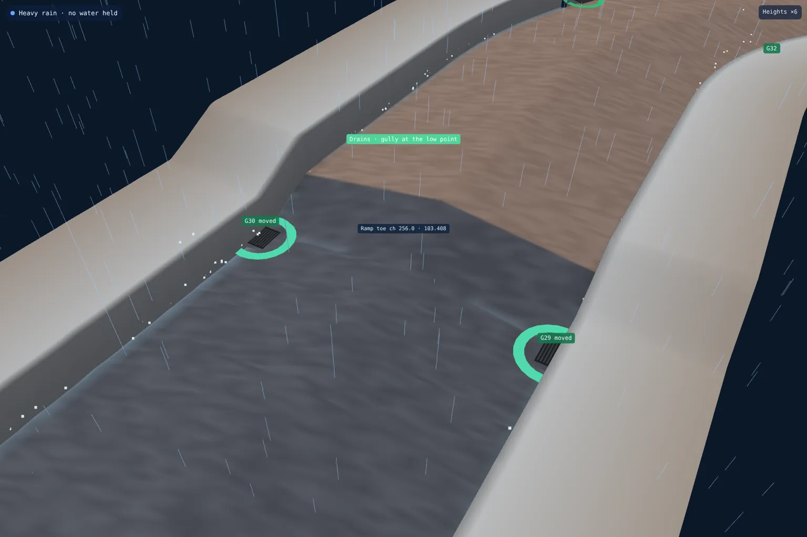
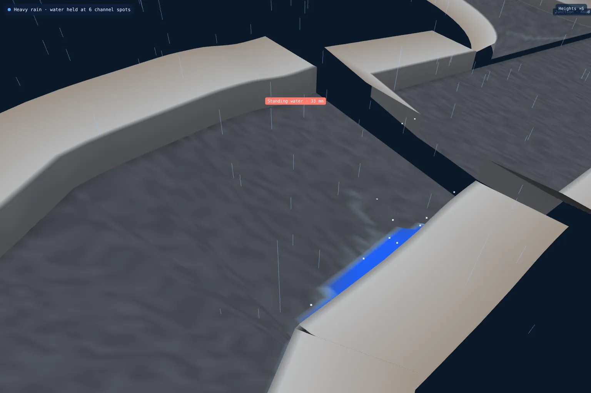

Road & sub-base level surveys
Sub-base and binder checked against the road design before the next layer goes on.
Surface water flow testing
Every road and every gully on your site, modelled in 3D at true scale and run under heavy rain. You see the water run into each channel, which gullies take it, and exactly where it will stand and how deep, before the adoption inspector finds it.

In short: we build a true-scale 3D model of every adoptable road from the road levels, either the design or our survey of what has been laid. We place every gully from the drainage layout, then run it under heavy rain. Water follows the real falls into the channels, along them and into the gullies. Anywhere it can't reach a grate is shown as standing water, with its depth and location, and the model is run again with a gully moved or added to show the fix clears it.
Thirteen adoptable roads and 96 gullies on a housing development, tested as drawn. The client and site are not named. Drag to look around, switch the rain on and off, and turn on Gullies at the low points to see the fix.
Works in any modern browser on a phone, tablet or laptop. Heights are shown six times true so the falls are visible; every figure it reports is true. Open it full screen.
The same test whether the road is still on paper or already laid. Only where the levels come from changes.
Before you build: the engineer's road levels, channels, centrelines, tables and ramps. Once it's laid: our laser scan of the binder or surface course, tied to your site control.
Every gully on the drainage layout, or as set on site, placed at its true position against the kerb, working or not.
Heavy rain on every road. Water runs off the crossfall into the channel, along the channel, through junction mouths and on to the next road, exactly as the levels say it will.
Every gully marked as working or with water standing beside it, and every place water is held logged by road, side, chainage and depth.
The model run again with gullies moved to the low points or added, so you can see the change clears the water before anyone digs.
Two gullies sat about a metre past the toe of a raised table. In heavy rain, 8 to 9 mm of water stood against the ramp on both sides. Moved to the toe, they take it all.

Tested from the engineer's levels alongside a Dimensure Design Audit. A gully on the wrong side of a build-out or a ramp toe is found on the drawing, where the fix is a revision. That's how we found 22 missing road gullies on one scheme before a kerb was laid.
Tested from our laser scan of the laid road. Binder that has gone down a few millimetres flat, a channel with a dip in it, a gully set a metre off its low point: the model shows where the water will sit before the surface course goes on, or before the pre-adoption inspection, while it's still a small job.

Flow testing is an add-on to a Design Audit or a road level survey. It isn't included in either as standard. Ask for it when you book and it goes into the fixed price.
Ask about flow testingSub-base and binder checked against the road design before the next layer goes on.
Before-and-after scans that map the thickness actually laid, across the whole road.
Slab flatness, brickwork to drawing and drain collar positions, checked plot by plot.
Finished roads, kerbs, drainage covers and plots recorded, with as-built drawings in DWG and PDF.
Slabs and screeds scanned edge to edge and checked against SR1-SR3 or your flatness class.
Millimetre-accurate floor plans and elevations for kitchens, extensions and architects.
Levels, contours, boundaries, buildings and trees for planning and design, with the full 3D scan.
Groundworks and civils drawings reviewed before you dig, on any project: problems found on paper.
Levels, walls, steps, trees and drains surveyed for garden designers, landscapers and homeowners.
Aerial mapping tied to RTK GNSS control: scaled orthophotos, levels and contours for whole sites.
Every heap of stone, topsoil and spoil measured by drone, in cubic metres and tonnes.
Cut and fill against design or a previous survey, topsoil strip depths and muck-shift checks.
Monthly drone records of the whole site, compared with last month, for valuations and reports.
Site control on Ordnance Survey grid, and pegs for earthworks, drainage, roads and plots.
Drainage, chambers and ducts recorded in the open trench, with levels and photos, before backfill.
Roads, kerbs, walls and neighbouring buildings recorded by scan, drone and photo before work starts.
Close-up roof inspections without scaffold, with measured roof areas and pitches if needed.
Already have a scan or your engineer's levels? We process your data and report against design, no visit needed.
It is a check of where rainwater actually goes on a road. We build a true-scale 3D model of every road on the site, place every gully from the drainage layout, and run it under heavy rain. Water runs off the crossfall into the channels, along the channels and into the gullies. Anywhere a channel can't reach a grate, the water stands, and the model shows how deep, how long and exactly where.
Yes. We laser scan the laid binder or surface course, with the gully grates as they are on site, and run the same rain test on the surface that was actually laid. That shows low spots, flat channels and gullies set in the wrong place before the surface course goes down or before the pre-adoption inspection, while it is still cheap to put right.
Yes. At design stage the model is built from the engineer's road levels and the drainage layout, usually alongside a Dimensure Design Audit. Missing or misplaced gullies are found on the drawings, where the fix is a revision rather than a road cut open.
The model uses the same levels as your design or our survey, at 0.25 m spacing along every channel, and reports held water to the nearest millimetre. On its first job it reproduced hand-worked channel checks to within about 1 mm. Where a gully position can only be read from a drawing to about ±0.3 m, we say so in the covering note.
No. It tests where surface water ends up: whether every channel falls to a grate, and where it is held instead. It does not size pipes or check gully spacing against a rainfall intensity; that stays with the drainage engineer. The depth shown is how much water a hollow holds before it spills, which is what the adoption inspector sees after rain.
Estate road falls are small. A 1:40 crossfall and a 1:150 channel fall are hard to see at true scale, so the model lifts heights six times by default so you can see the shape. Every level, depth and chainage it reports is the true figure, and you can switch the exaggeration down to true scale.
It opens from a link in any web browser, on a phone, tablet or laptop. There's nothing to install and no login, so it can go straight to your site manager, engineer or adoption officer.
No. It is an add-on, requested and priced separately on top of the Design Audit or the road level survey it is built from. Ask for it when you book and we include it in the fixed price.
Every adoptable road on the site as standard, with junction mouths open to the side roads so water carries on across them as it would on site. Private drives, parking courts and shared surfaces can be added on request. Roads with an open level query are shown but not tested until the levels are confirmed.
Send the drawing, the location and when you need it. We reply the same working day with a fixed price.